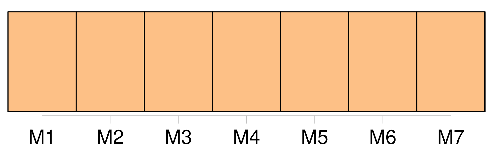

Longueur nb maillons : 29 mentions |
  |
De cette vie somnambulique il m’ est resté des souvenirs d’ objets et de mots dont je ne puis pas me défendre, et, quoique je ne sois jamais sorti des murs de mon presbytère, [on] dirait plutôt, à m’ entendre, un homme ayant usé de tout et revenu du monde, qui est entré en religion et qui veut finir dans le sein de Dieu des jours trop agités, qu’ un humble séminariste qui a vieilli dans une cure ignorée, au fond d’ un bois et sans aucun rapport avec les choses du siècle. [8 phrases] Je savais vaguement qu’ il y avait quelque chose que l’ [on] appelait femme, mais je n’ y arrêtais pas ma pensée ; j’ étais d’ une innocence parfaite. [20 phrases]
Une minute après, je rouvris les yeux, car à travers mes cils je la voyais étincelante des couleurs du prisme, et dans une pénombre pourprée comme lorsqu’ [on] regarde le soleil. [4 phrases] Elle était assez grande, avec une taille et un port de déesse ; ses cheveux, d’ un blond doux, se séparaient sur le haut de sa tête et coulaient sur ses tempes comme deux fleuves d’ or ; [on] aurait dit une reine avec son diadème ; son front, d’ une blancheur bleuâtre et transparente, s’ étendait large et serein sur les arcs de deux cils presque bruns, singularité qui ajoutait encore à l’ effet de prunelles vert de mer d’ une vivacité et d’ un éclat insoutenables. [16 phrases]
[On] n’ ose causer un tel scandale devant tout le monde ni tromper l’ attente de tant de personnes ; toutes ces volontés, tous ces regards semblent peser sur vous comme une chape de plomb ; et puis les mesures sont si bien prises, tout est si bien réglé à l’ avance, d’ une façon si évidemment irrévocable, que la pensée cède au poids de la chose et s’ affaisse complétement. [3 phrases]
J’ étais, tout éveillé, dans un état pareil à celui du cauchemar, où l’ [on] veut crier un mot dont votre vie dépend, sans en pouvoir venir à bout. [38 phrases]
c’ est-à-dire chaste, ne pas aimer, ne distinguer ni le sexe ni l’ âge, se détourner de toute beauté, se crever les yeux, ramper sous l’ ombre glaciale d’ un cloître ou d’ une église, ne voir que des mourants, veiller auprès de cadavres inconnus et porter [soi -même] [son] deuil sur [sa] soutane noire, de sorte que l’ [on] peut faire de [votre] habit un drap pour [votre] cercueil! [2 phrases] Je n’ avais aucun prétexte pour sortir du séminaire, ne connaissant personne dans la ville ; je n’ y devais même pas rester, et j’ y attendais seulement que l’ [on] me désignât la cure que je devais occuper. [45 phrases]
[On] en distinguait les moindres détails, les tourelles, les plates-formes, les croisées, et jusqu’ aux girouettes en queue d’ aronde. [8 phrases] L’ ombre gagna le palais, et ce ne fut plus qu’ un océan immobile de toits et de combles où l’ [on] ne distinguait rien qu’ une ondulation montueuse. [15 phrases] Un soir, en me promenant dans les allées bordées de buis de mon petit jardin, il me sembla voir à travers la charmille une forme de femme qui suivait tous mes mouvements, et entre les feuilles étinceler les deux prunelles vert de mer ; mais ce n’ était qu’ une illusion, et, ayant passé de l’ autre côté de l’ allée, je n’ y trouvai rien qu’ une trace de pied sur le sable, si petit qu’ [on] eût dit un pied d’ enfant. [8 phrases] Une nuit l’ [on] sonna violemment à ma porte. [33 phrases] Il me sembla qu’ [on] avait soupiré aussi derrière moi, et je me retournai involontairement. [4 phrases]
[On] eût dit une statue d’ albâtre faite par quelque sculpteur habile pour mettre sur un tombeau de reine, ou encore une jeune fille endormie sur qui il aurait neigé. [10 phrases] cette perfection de formes, quoique purifiée et sanctifiée par l’ ombre de la mort, me troublait plus voluptueusement qu’ il n’ aurait fallu, et ce repos ressemblait tant à un sommeil que l’ [on] s’ y serait trompé. [4 phrases] La pâleur de ses joues, le rose moins vif de ses lèvres, ses longs cils baissés et découpant leur frange brune sur cette blancheur lui donnaient une expression de chasteté mélancolique et de souffrance pensive d’ une puissance de séduction inexprimable ; ses longs cheveux dénoués, où se trouvaient encore mêlées quelques petites fleurs bleues, faisaient un oreiller à sa tête et protégeaient de leurs boucles la nudité de ses épaules ; ses belles mains, plus pures, plus diaphanes que des hosties, étaient croisées dans une attitude de pieux repos et de tacite prière, qui corrigeait ce qu’ auraient pu avoir de trop séduisant, même dans la mort, l’ exquise rondeur et le poli d’ ivoire de ses bras nus dont [on] n’ avait pas ôté les bracelets de perles. [1 phrases] Je ne sais si cela était une illusion ou un reflet de la lampe, mais [on] eût dit que le sang recommençait à circuler sous cette mate pâleur ; cependant elle était toujours de la plus parfaite immobilité. [39 phrases] [On] a renouvelé là les abominations des festins de Balthazar et de Cléopâtre. [3 phrases] [On] a dit que c’ était une goule, un vampire femelle ; mais je crois que c’ était Béelzébuth en personne. [4 phrases] La pierre de Clarimonde devrait être scellée d’ un triple sceau ; car ce n’ est pas, à ce qu’ [on] dit, la première fois qu’ elle est morte. [6 phrases] Elle portait à la main une petite lampe de la forme de celles qu’ [on] met dans les tombeaux, dont la lueur donnait à ses doigts effilés une transparence rose qui se prolongeait par une dégradation insensible jusque dans la blancheur opaque et laiteuse de son bras nu. [9 phrases] Que d’ efforts il m’ a fallu faire avant de lever la dalle dont [on] m’ avait couverte!! [12 phrases]
Une chose remarquable, c’ est que je n’ éprouvais aucun étonnement d’ une aventure aussi extraordinaire, et, avec cette facilité que l’ [on] a dans la vision d’ admettre comme fort simples les événements les plus bizarres, je ne voyais rien là que de parfaitement naturel. [163 phrases] Enfin la pioche de Sérapion heurta le cercueil dont les planches retentirent avec un bruit sourd et sonore, avec ce terrible bruit que rend le néant quand [on] y touche ; il en renversa le couvercle, et j’ aperçus Clarimonde pâle comme un marbre, les mains jointes ; son blanc suaire ne faisait qu’ un seul pli de sa tête à ses pieds. |

|
La ressource peut être téléchargée sur la page Ortolang
Si vous avez des questions ou vous voyez des erreurs, merci d'envoyer un mail à silvia.federzoni89@gmail.com
Site développé par S. Federzoni (contact)